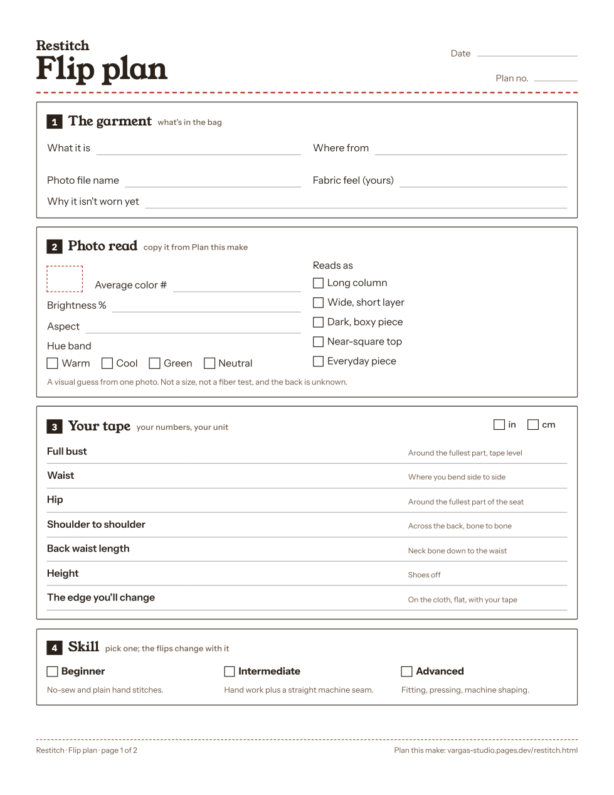
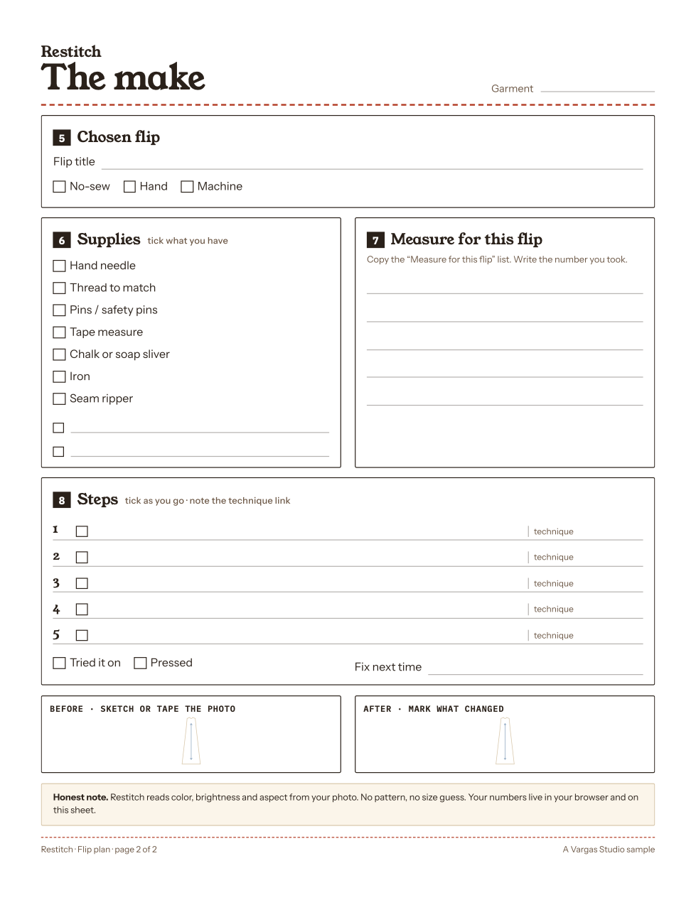

Print · US Letter · 2 pages
Flip plan worksheet.
One sheet per thrift find. Copy the read from Plan this make, write your own tape, tick supplies and steps at the table. Same order as the planner: photo, skill, tape, flip.


How to use it
- Upload the photo at Plan this make and copy the hex, brightness and aspect into box 2.
- Measure yourself and the cloth. Write numbers in box 3, in the unit you like.
- Pick a flip in the planner and copy its notions, measure list and steps onto page 2.
- Tape the before photo into the first box. Sketch what changed in the second.
Printing tip: “Actual size”, margins default. The PDF is a blank worksheet, not a pattern.